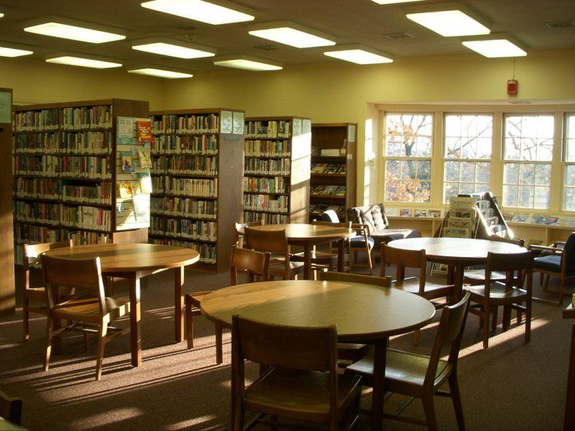

Marrowby Record Office
Daily sheet · Tue 13 Oct 2026
County record office branch. 1,840 m of parish, school, mill and council records from 1538 to 1998.
Today
StatusOpen today 09:30 – 16:30
Morning desks7 of 12 free
Afternoon desks5 of 12 free
Next pull to the reading room11:30 order by 10:45
Off-site orders arriveWed 14 Oct, 10:00
ClosedSundays, Mondays, 24–26 and 31 Dec, 1 Jan
Six series listed online
Order time and arrival, today
Four pulls a day: 10:00, 11:30, 14:00, 15:30. An order must be in 45 minutes before a pull. Off-site items are not on this table.
| Order at | Pull | Strongroom A | Map Store | Basement |
|---|---|---|---|---|
| 09:30 now | 11:30 | 11:40 | 11:50 | 11:55 |
| 09:45 | 11:30 | 11:40 | 11:50 | 11:55 |
| 10:00 | 11:30 | 11:40 | 11:50 | 11:55 |
| 10:15 | 11:30 | 11:40 | 11:50 | 11:55 |
| 10:30 | 11:30 | 11:40 | 11:50 | 11:55 |
| 10:45 | 11:30 | 11:40 | 11:50 | 11:55 |
| 11:00 | 14:00 | 14:10 | 14:20 | 14:25 |
| 11:15 | 14:00 | 14:10 | 14:20 | 14:25 |
| 11:30 | 14:00 | 14:10 | 14:20 | 14:25 |
| 11:45 | 14:00 | 14:10 | 14:20 | 14:25 |
| 12:00 | 14:00 | 14:10 | 14:20 | 14:25 |
| 12:15 | 14:00 | 14:10 | 14:20 | 14:25 |
| 12:30 | 14:00 | 14:10 | 14:20 | 14:25 |
| 12:45 | 14:00 | 14:10 | 14:20 | 14:25 |
| 13:00 | 14:00 | 14:10 | 14:20 | 14:25 |
| 13:15 | 14:00 | 14:10 | 14:20 | 14:25 |
| 13:30 | 15:30 | 15:40 | 15:50 | 15:55 |
| 13:45 | 15:30 | 15:40 | 15:50 | 15:55 |
| 14:00 | 15:30 | 15:40 | 15:50 | 15:55 |
| 14:15 | 15:30 | 15:40 | 15:50 | 15:55 |
| 14:30 | 15:30 | 15:40 | 15:50 | 15:55 |
| 14:45 | 15:30 | 15:40 | 15:50 | 15:55 |
| 15:00 | Wed 14 Oct, 10:00 | 10:10 | 10:20 | 10:25 |
| 15:15 | Wed 14 Oct, 10:00 | 10:10 | 10:20 | 10:25 |
| 15:30 | Wed 14 Oct, 10:00 | 10:10 | 10:20 | 10:25 |
| 15:45 | Wed 14 Oct, 10:00 | 10:10 | 10:20 | 10:25 |
| 16:00 | Wed 14 Oct, 10:00 | 10:10 | 10:20 | 10:25 |
| 16:15 | Wed 14 Oct, 10:00 | 10:10 | 10:20 | 10:25 |
| 16:30 | Wed 14 Oct, 10:00 | 10:10 | 10:20 | 10:25 |

Shelving1,840 m
Earliest record1538
Series listed online6 of 214
Readers in 20253,912